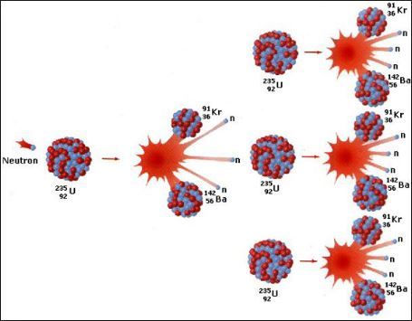

Q. 2: नाभिकीय विखंडन एवं नाभिकीय संलयन की परिभाषा उदाहरण सहित दीजिए
Ans:
नाभिकीय विखण्डन (Nuclear Fission)- नाभिकीय विखण्डन वह क्रिया है, जिसमें कोई भारी नाभिक दो या दो से अधिक छोटे भागों में तोड़ा जाता है। इस क्रिया में अत्यधिक ऊर्जा का उत्सर्जन होता है। उदाहरण के लिए, जब यूरेनियम (92U235) को न्यूट्रॉन के प्रहार द्वारा विखण्डित किया जाता है तो बेरियम तथा क्रिप्टॉन के परमाणु बनते हैं।
92U235 + 0n1 -> 3 0n1 + 36Kr92 + 56Ba141 + ऊर्जा
ऊपर दी गई अभिक्रिया में जो न्यूट्रॉन बाहर निकलते हैं, उनकी गति कई हजार किलोमीटर प्रति सेकण्ड होती है, इस कारण ये परमाणुओं को विखण्डित करने में अति उपयोगी हैं। इसका उपयोग परमाणु बम बनाने में किया जाता है।
परमाणु बम बनाने में उपरोक्त क्रिया लगातार जारी रहती है तथा न्यूट्रॉन की संख्या बढ़ती जाती है जो अन्य यूरेनियम के परमाणुओं का विखण्डन करती है। इस प्रकार न समाप्त होने वाली अभिक्रिया की श्रृंखला (chain reaction) जारी रहती है।

चित्र 2.2 यूरेनियम की श्रृंखला अभिक्रिया
नाभिकीय संलयन (Nuclear Fusion) - वह नाभिकीय अभिक्रिया जिसमें दो बहुत हल्के नाभिक परस्पर संयुक्त होकर भारी नाभिक बनाते हैं नाभिकीय संलयन कहलाती है। नाभिकीय संलयन क्रिया में द्रव्यमान की अधिक क्षति होने के कारण अपार ऊर्जा उत्पन्न होती है जिसकी मात्रा नाभिकीय विखण्डन में उत्पन्न ऊर्जा से अधिक होती है। नाभिकीय संलयन अत्यंत उच्च ताप पर होता है इसलिए संलयन क्रियाओं को ऊष्मा नाभिकीय अभिक्रिया भी कहते हैं।
केन्द्र पर नाभिकीय विखण्डन → ऊष्मा + न्यूट्रॉन
3 Li 6 +0 n 1 -> 1 H 3 + 2He 4 +4.78 MeV
1 H 2 +1 H 2 -> 2 He 3 + 0n 1 + ऊर्जा + 17.6 MeV
1 H 2 +1 H 3 -> 2 He 4 + 0n 1 + ऊर्जा + 3.3 MeV
1 H 2 +1 H 3 -> 2 He 4 + 2 0n 1 + ऊर्जा +11 MeV
उपयुक्त प्रत्येक संलयन में 3(1/20) Mev ऊर्जा प्राप्त होती है। नाभिकीय विखण्डन तथा नाभिकीय संलयन से प्राप्त अपरिमित ऊर्जा को ही नाभिकीय ऊर्जा (nuclear energy) कहते हैं। सूर्य में H
2 का संलयन निम्नलिखित अभिक्रियाओं द्वारा होता है -
1 H 1 +1 H 1 -> 1 H 2 + -1e 0 + ऊर्जा
1 H 2 +1 H 1 -> 2 He 3 + ऊर्जा
2 He 3 +1 H 1 -> 2 He 4 + -1e 0 + ऊर्जा
उपरोक्त अभिक्रियाओं को संयुक्त रुप से निम्नलिखित प्रकार से व्यक्त कर सकते हैं -
41He1 --> 2He4+2-1e0+26.7+ ऊर्जा
सूर्य की ऊर्जा का कारण हाइड्रोजन परमाणुओं के परस्पर संयुक्त होने से हीलियम परमाणु का बनना है।
2He
4 का बनना ऊष्मा, प्रकाश तथा ऊर्जा को उत्सर्जित करता है।